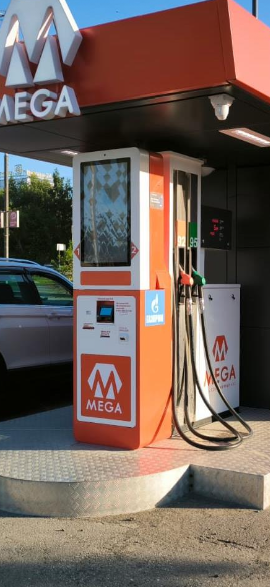
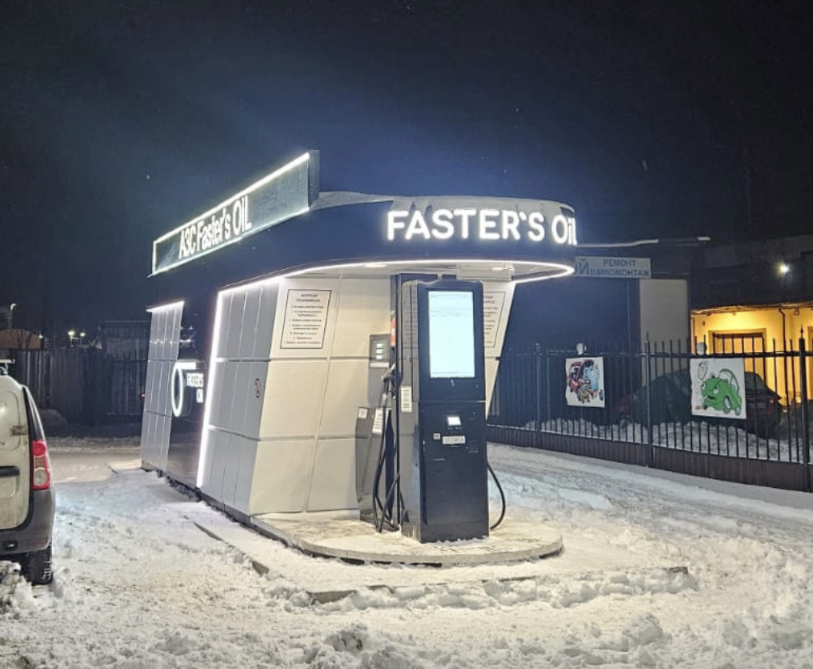

Кейсы
Что изменилось после установки

Трассовая АЗС, Ленинградская обл.
Два S-30 заменили круглосуточную операторную. Ночная выручка выросла на 27%, ФОТ сократился на 1,6 млн ₽ в год.

ИнтеллектТерминал S-30КАЗС у гипермаркета, СПб
Терминал S-30 в составе новой КАЗС. Станция работает без персонала с первого дня, средний чек выше на 9%.

Сеть из 6 АЗС, Северо-Запад
Шесть S-1 на действующих АЗС разных производителей ТРК. Единый учёт и цены из одного кабинета, недостачи по итогам года — 0 л.
ЛУКОЙЛFaster's OilИП ВитрякХели-ДрайвМега